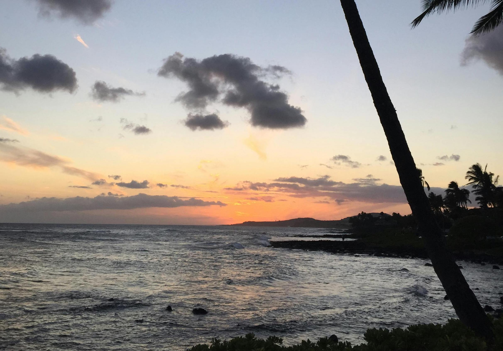

People Surfing on Seawaves Pexels.
Located on the Big Island in Hawaii is a beautiful city called Kona. This lively bay side town offers visitors breath taking beaches, local shopping, and a unique selection of good eats. Kona is known for its signature coffee called Kona Coffee which is grown in the lush hillsides in rich volcanic soil. Kona is also known for the night time manta ray snorkel dives where you are able to swim with manta rays.
Big Island is recognized for its slow paced lifestyle, however Kona offers a fun and exciting night life where visitors can do karaoke, visit a comedy show, visit a luau or enjoy the sunset from a balcony bar. Kona Brewing is another popular visitor attraction where good food, even better drinks, and laughter are always enjoyed.
Magic Sands Beach
Located in the heart of Kona, magic sands beach offers fun for the whole family. From beach volley ball, to picnics under the trees, or body boarding through the waves. Magic Sands is known for its great body boarding waves and bright white sand. Magic Sands also has onsight bathrooms, extensive parking and lifeguards on duty making the experience stress free and easily accessible.

Coconut Palm Tree Near Ocean during Sunrise Pexels.
Kona Farmers Market
Enjoy the Kona Farmers Market Wednesdays through Sundays from 7 am to 4 pm. This event highlights Hawaii’s culture while celebrating community. Show support by purchasing locally grown produce and hand-crafted knick-knacks.
Green Palm Tree Near Yellow and White Store
Pexels.
Kona Brewing Co.
Enjoy the flavor notes of Kona through Kona Brewing Co’s artisan beer. From tangy pineapple flavors to rich toasted coconut elements, Kona Brewing has an option for everyone. Pair your delicious brews with Kona Brewing Co.’s pizza slice of the day.
Friends Having Glasses of Beer Pexels.